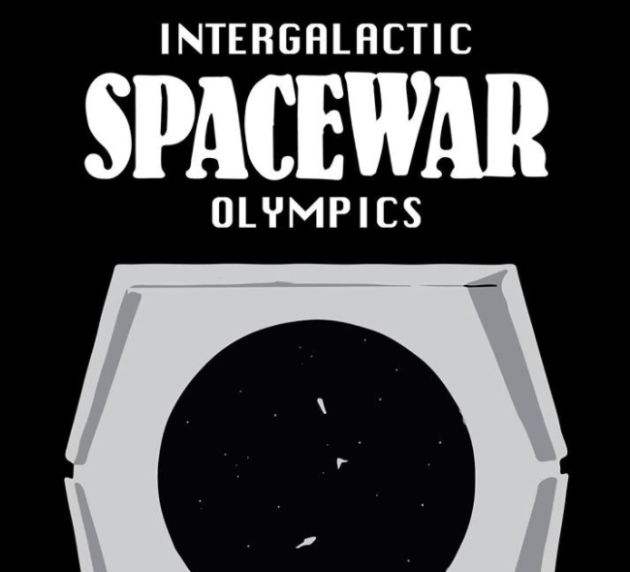
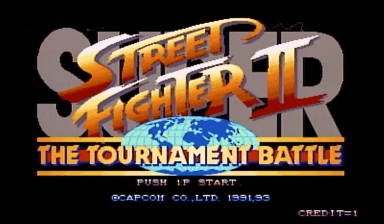
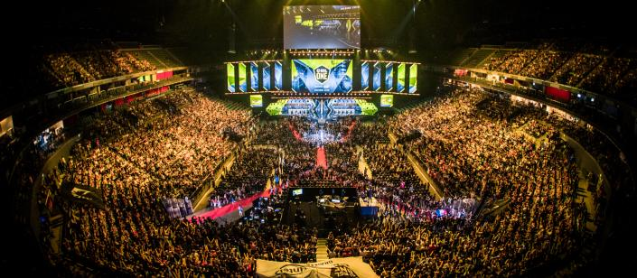
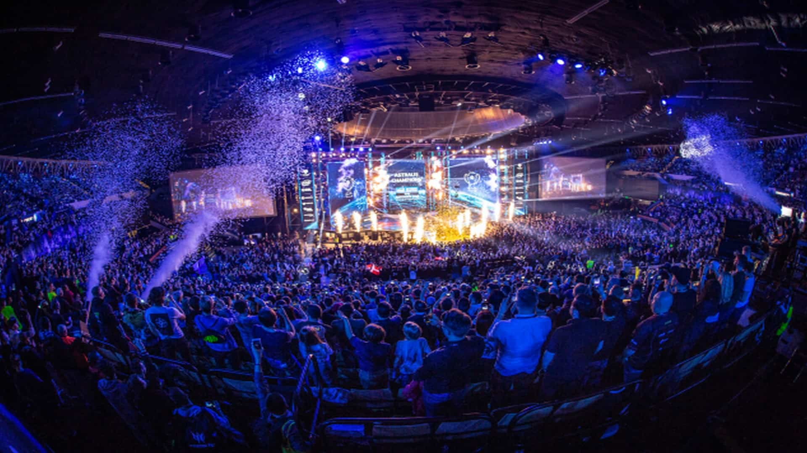
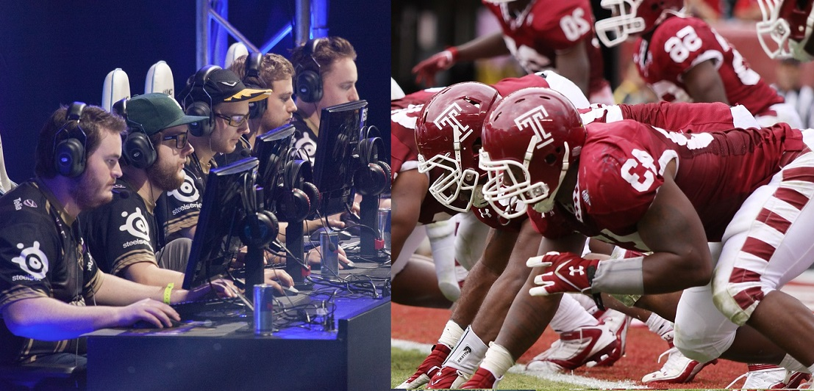
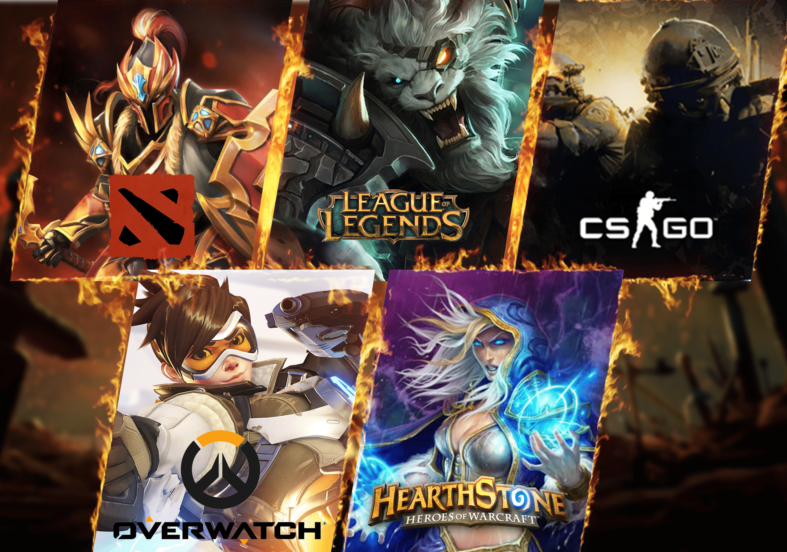
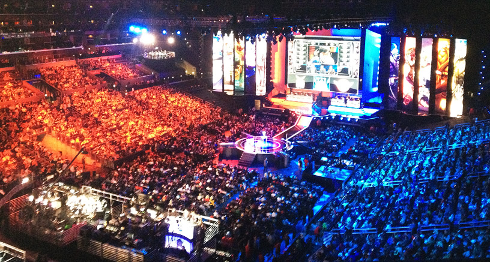

Industria eSports
Industria eSports
Esportul (cunoscut și sub numele de sport electronic, e-sport sau eSports) este o formă de competiție bazată pe jocurile video. Esportul ia adesea forma unor competiții organizate de jocuri video multiplayer, în special între jucători profesioniști, individual sau ca echipe. Deși competițiile organizate au făcut mult timp parte din cultura jocurilor video, acestea au fost în mare parte între amatori până la sfârșitul anilor 2000, când participarea jucătorilor profesioniști și a spectatorilor la aceste evenimente prin streaming live au dus la o creștere mare a popularității. Începând cu anii 2010-2012, sporturile electronice au devenit factor semnificativ în industria jocurilor video, mulți dezvoltatori de jocuri proiectând și oferind în mod activ finanțare pentru turnee și alte evenimente.
Cele mai frecvente genuri de jocuri video asociate cu e-sporturile sunt jocurile MOBA , shooterul (FPS), jocurile de lupte, cărțile, battle royale și jocurile de strategie în timp real (RTS). Francizele esport populare includ League of Legends, Dota, Counter-Strike, Overwatch, Street Fighter, Super Smash Bros. și StarCraft, printre multe altele. Turnee precum Campionatul Mondial League of Legends, Dota 2's International, Evolution Championship Series (EVO) specific jocurilor de luptă și Intel Extreme Masters sunt printre cele mai populare în esports. Multe alte competiții folosesc o serie de jocuri de ligă cu echipe sponsorizate, cum ar fi Liga Overwatch. Deși legitimitatea e-sporturilor ca o adevărată competiție sportivă rămâne în discuție, acestea au fost prezentate alături de sporturile tradiționale în unele evenimente multinaționale din Asia, Comitetul Olimpic Internațional a discutat, de asemenea, includerea lor în viitoarele evenimente olimpice.
Până la sfârșitul anilor 2010, s-a estimat că audiența totală a e-sporturilor va crește la 454 de milioane de telespectatori, veniturile crescând la peste 1 miliard de dolari. Disponibilitatea în creștere a platformelor media online de streaming, în special YouTube și Twitch, au devenit esențiale pentru creșterea și promovarea competițiilor e-sport. În ciuda faptului că spectatorii sunt de aproximativ 85% bărbați și 15% femei, cu o majoritate de spectatori cu vârste cuprinse între 18 și 34 de ani, jucătorii de sex feminin au jucat, de asemenea, în mod profesional. Popularitatea și recunoașterea e-sporturilor au început pentru prima dată în Asia, înregistrând o creștere semnificativă în China și Coreea de Sud, aceasta din urmă având jucători profesioniști autorizați din anii 2000. În ciuda industriei sale mari de jocuri video, e-sporturile din Japonia sunt relativ subdezvoltate, acest lucru fiind atribuit în mare măsură la legile sale generale împotriva jocurilor de noroc care interzic turneele profesionale de jocuri plătite. În afara Asiei, e-sporturile sunt, de asemenea, populare în Europa și America, evenimentele atât regionale, cât și internaționale care au loc în aceste regiuni.
Cea mai veche competiție de jocuri video cunoscută a avut loc la 19 octombrie 1972 la Universitatea Stanford pentru jocul Spacewar. Studenții de la Stanford au fost invitați la un „Joc olimpic spațial intergalactic” al cărui mare premiu a fost un abonament de un an la Rolling Stone, Bruce Baumgart câștigând turneul individual în 5 jucători, iar Tovar și Robert E. Maas câștigând competiția pe echipe.

Epoca de aur a jocurilor video arcade a fost începută de Space Invaders de la Taito în 1978, care a popularizat utilizarea unui scor persistent (highschore) pentru toți jucătorii. Mai multe jocuri video din următorii câțiva ani au urmat exemplul, adăugând alte mijloace de urmărire a scorurilor mari, cum ar fi tabelele cu scoruri, care includeau inițialele jucătorilor în jocuri precum Asteroids în 1979. Urmărirea scorurilor a devenit o activitate populară și un mijloc de competiție. Campionatul Space Invaders organizat de Atari în 1980 a fost cea mai veche competiție de jocuri video pe scară largă, atrăgând peste 10.000 de participanți în Statele Unite, stabilind jocurile competitive ca un hobby de masă. Walter Day, proprietarul unei arcade din Iowa, se angajase să călătorească în Statele Unite pentru a înregistra scorurile mari la diferite jocuri în 1980 și, la întoarcere, a fondat Twin Galaxies, o organizație de înregistrare a scorurilor. Organizația a continuat să promoveze jocurile video și să-și facă publicitatea înregistrărilor prin publicații precum Guinness Book of World Records, iar în 1983 a creat Echipa Națională de Jocuri Video din SUA. Echipa a fost implicată în competiții, cum ar fi organizarea Turneului Maestru de Jocuri Video pentru Guinness World Records și sponsorizarea turneului North American Video Game Challenge. Un turneu multicultural în 1983, „Circul electronic”, a fost folosit pentru a trece jucătorii prin provocări live în fața publicului și pentru a atrage mai mulți oameni la jocuri video. Acești jucători de jocuri video au fost prezentați în ziare și reviste populare bine circulate, inclusiv Life and Time și au devenit celebrități minore la acea vreme, cum ar fi Billy Mitchell. Pe lângă stabilirea naturii competitivă a jocurilor, aceste tipuri de evenimente promoționale au format natura marketingului și promovării care au stat la baza e-sporturilor moderne.
Evenimentele de e-sport televizate difuzate în această perioadă au inclus emisiunea americană Starcade, care a avut loc între 1982 și 1984, difuzând un total de 133 de episoade, îm care concurenții încercau să-și bată reciproc scorurile într-un joc arcade. Un turneu de jocuri video a fost inclus ca parte a emisiunii TV That's Incredible!, și turnee au fost, de asemenea, prezentate ca parte a complotului diverselor filme, inclusiv Tron din 1982 În Marea Britanie, emisiunea BBC First Class a inclus runde de jocuri video competitive cu jocuri arcade contemporane, precum Hyper Sports, 720 ° și Paperboy. În Statele Unite, Amusement Players Association a organizat prima sa competiție națională în ianuarie 1987, unde Vs. Super Mario Bros. a fost popular printre jucătorii de arcade competiționali.

Jocul de luptă Street Fighter II (1991) a popularizat conceptul de competiție directă la nivel de turneu între doi jucători. Anterior, jocurile video se bazau cel mai adesea pe scoruri pentru a determina cel mai bun jucător, dar acest lucru s-a schimbat odată cu Street Fighter II, unde jucătorii se contestau reciproc direct, „față în față”, pentru a determina cel mai bun jucător, deschizând calea modurilor competitive multiplayer și deathmatch găsite în jocurile moderne de acțiune. Popularitatea jocurilor de luptă, cum ar fi Street Fighter și Marvel vs. Capcom a dus la înființarea turneului internațional de esports Evolution Championship Series (EVO) în 1996.
Turneele sportive mari din anii 1990 includ Campionatele Mondiale Nintendo din 1990, care au făcut turnee în Statele Unite și au avut loc finalele sale la Universal Studios Hollywood din California. Nintendo a organizat un al doilea Campionat Mondial în 1994 pentru sistemul de divertisment Super Nintendo numit Nintendo PowerFest '94. Au fost 132 de finaliști care au jucat în finala din San Diego, California. Mike Iarossi a luat acasă premiul I. Blockbuster Video a organizat, de asemenea, propriile Campionate Mondiale de Jocuri la începutul anilor '90, co-găzduite de revista GamePro. Cetățenii din Statele Unite, Canada, Regatul Unit, Australia și Chile au fost eligibili să concureze. Jocurile din campionatele din 1994 au inclus NBA Jam și Virtua Racing.
Emisiunile de televiziune cu e-sporturi în această perioadă au inclus emisiunile britanice GamesMaster și Bad Influence! și spectacolul australian de jocuri A*mazing, unde într-o rundă concurenții au concurat într-un joc video, și spectacolul canadian Video & Arcade Top 10. În anii 1990, multe jocuri au beneficiat de creșterea conectivității la internet, în special a jocurilor pentru PC. Turneele stabilite la sfârșitul anilor 1990 includ Cyberathlete Professional League (CPL), QuakeCon și Professional Gamers League. Jocurile pe PC jucate la CPL includeau seria Counter-Strike, seria Quake, StarCraft și Warcraft.

Creșterea e-sporturilor din Coreea de Sud se crede că a fost influențată de construirea în masă a rețelelor de internet broadband după criza financiară asiatică din 1997. Se crede, de asemenea, că rata ridicată a șomajului la acea vreme a făcut ca mulți oameni să caute lucruri de făcut în timp ce nu lucrează. Instrumental pentru această creștere a e-sporturilor din Coreea de Sud a fost prevalența centrului de jocuri Internet café / LAN în stil Komany, cunoscut sub numele de PC bang. Asociația coreeană de e-sport, o ramură a Ministerului Culturii, Sportului și Turismului, a fost înființată în 2000 pentru a promova și reglementa e-sporturile din țară.
Anii 2000 au fost o perioadă populară pentru esporturile televizate. Acoperirea de televiziune a fost stabilită cel mai bine în Coreea de Sud, cu competițiile StarCraft și Warcraft III televizate în mod regulat de canalele dedicate de jocuri Ongamenet și MBCGame. În altă parte, acoperirea televiziunii esports a fost sporadică. Televiziunea germană GIGA a acoperit e-sporturile până la închiderea sa în 2009. Canalul de televiziune prin satelit din Marea Britanie XLEAGUE.TV a difuzat competiții de e-sport din 2007 până în 2009. Canalul de esports online ESL TV a încercat pe scurt un model de televiziune cu plată redenumit GIGA II din iunie. Din 2006 până în toamna anului 2007. Canalul francez Game One a difuzat meciuri sportive într-un spectacol numit Arena Online pentru Xfire Trophy. Canalul american ESPN a găzduit competițiile Madden NFL într-un spectacol numit Madden Nation din 2005 până în 2008. DirecTV a transmis turneul Championship Gaming Series timp de două sezoane în 2007 și 2008. CBS a difuzat imagini preînregistrate ale turneului World Series of Video Games din 2007 care a avut loc la Louisville, Kentucky. Canalul de televiziune G4 acoperea inițial jocurile video exclusiv, dar și-a extins domeniul de aplicare pentru a acoperi tehnologia și stilul de viață al bărbaților, deși a fost oprit acum.

În anii 2010, e-sporturile au crescut enorm, provocând o creștere semnificativă atât a spectatorilor, cât și a premiilor în bani. Deși turneele mari au fost fondate înainte de secolul 21, numărul și sfera turneelor au crescut semnificativ, trecând de la aproximativ 10 turnee în 2000 la aproximativ 260 în 2010. Multe turnee de succes au fost fondate în această perioadă, inclusiv World Cyber Games, Intel Extreme Masters și Major League Gaming. Proliferarea turneelor a inclus experimentarea cu competiții în afara genurilor tradiționale de sport. De exemplu, campionatul FUN Technologies Worldwide Webgames Championship din septembrie 2006 a inclus 71 de concurenți care concurează în jocuri casual pentru un mare premiu de 1 milion de dolari.
Popularitatea și apariția serviciilor de streaming online au ajutat la creșterea e-sporturilor în această perioadă și sunt cea mai comună metodă de vizionare a turneelor. Twitch, o platformă de streaming online lansată în 2011, transmite în mod obișnuit competiții sportive populare. În 2013, telespectatorii platformei au urmărit 12 miliarde de minute de videoclip pe serviciu, cele mai populare două emisiuni Twitch fiind League of Legends și Dota 2. Într-o zi de desfășurare a unui campionat internațional, Twitch a înregistrat 4,5 milioane de vizionări unice, fiecare spectator urmărind în medie două ore.
Boom-ul modern de e-sport a cunoscut, de asemenea, o creștere în interesul companiilor de jocuri video de a îmbrățișa potențialul de e-sport al produselor lor. După mulți ani de ignorare și, uneori, suprimarea scenei esports, Nintendo a găzduit Wii Games în vara 2010. Turneul a avut peste 400.000 de participanți, devenind cel mai mare și cel mai expansiv turneu din istoria companiei. În 2014, Nintendo a găzduit un invitațional Super Smash Bros. pentru turneul competitiv Wii U la conferința de presă 2014 Electronic Entertainment Expo (E3), care a fost transmisă online pe Twitch. Dezvoltatorii Halo, 343 Industries, au anunțat în 2014 planurile de a revigora Halo ca esport, prin crearea Halo Championship Series și un fond de premii de 50.000 USD. Atât Blizzard Entertainment, cât și Riot Games au propriile lor programe colegiale de informare cu Campionatul Colegial din America de Nord. Din 2013, universitățile și colegiile din Statele Unite, cum ar fi Universitatea Robert Morris din Illinois și Universitatea din Pikeville, au recunoscut jucătorii sportivi ca sportivi de nivel universitar și oferă burse de sport. În 2017, Tespa, divizia de sporturi colegiale Blizzard Entertainment, a dezvăluit noua sa inițiativă de a oferi burse și premii pentru cluburile de sporturi colegiale care concurează în turneele sale în valoare de 1 milion de dolari SUA. Colegiile au început să acorde burse studenților care se califică pentru a juca sporturi profesionale pentru școală. Colegii precum Columbia College, Universitatea Robert Morris și Indiana Institute of Technology au luat parte la aceasta. În 2018, Universitatea Harrisburg de Știință și Tehnologie a început un program de burse de școlarizare pentru jucătorii de e-sport.

Etichetarea jocurilor video ca sport este un subiect controversat. Susținătorii consideră că e-sporturile sunt un „sport netradițional” aflat în creștere rapidă, care necesită „planificare atentă, sincronizare precisă și execuție abilă.” Alții susțin că sportul implică efort și antrenament fizic , și preferă să clasificați e-sporturile ca sport al minții.
În 2014, președintele de atunci al ESPN, John Skipper, a descris e-sporturile sportive ca „nu sunt un sport, sunt o competiție”. În 2013, într-un episod din Sporturi reale cu Bryant Gumbel, panelistul a râs deschis de subiect. În plus, mulți din comunitatea de jocuri de luptă mențin o distincție între competițiile lor de jocuri competitive și competițiile de e-sport mai conectate comercial din alte genuri. În Campionatul Mondial din 2015 găzduit de Federația Internațională de Sporturi, un grup de oaspeți din societatea sportivă internațională a discutat despre recunoașterea viitoare a e-sporturilor ca sport legitim.
China a fost una dintre primele țări care a recunoscut esportul ca fiind un adevărat sport în 2003, în ciuda îngrijorărilor de la momentul acela, potrivit cărora jocurile video cauzau dependentă. Prin aceasta, guvernul a încurajat esportul, afirmând că, participând la e-sport, jucătorii „pregăteau corpul pentru China”. Mai mult, până la începutul anului 2019, China a recunoscut jucătorii sportivi ca profesie oficială în cadrul recomandărilor Autorității de testare a abilităților ocupaționale ale Ministerului Resurselor Umane și Securității Sociale, precum și operatorilor profesioniști de jocuri, cei care distribuie și gestionează jocurile sportive. Până în iulie 2019, peste 100.000 de persoane s-au înregistrat ca jucători profesioniști în acest sens, Ministerul declarând că anticipează peste 2 milioane de astfel de persoane în această profesie în cinci ani. În august 2020, Beijingul a anunțat că va transforma parcul Shougang, o zonă veche de producție a oțelului, într-un parc de e-sport.
În 2013, jucătorul Canadian de League of Legends, Danny "Shiphtur" Le, a devenit primul jucător profesionist care a primit o viză americană P-1A, categorie desemnată pentru "Sportivi recunoscuți la nivel internațional". În 2014, Ministerul Tineretului și Sportului din Turcia a început să elibereze licențe de jucători esports jucătorilor certificați ca profesioniști. În 2016, guvernul francez a început să lucreze la un proiect de reglementare și recunoaștere a e-sporturilor. Consiliul de jocuri și distracții din Filipine a început să elibereze licență sportivă pentru jucătorii filipinezi de e-sport care sunt garantați de o echipă de e-sport profesioniști în iulie 2017.
Pentru a ajuta la promovarea e-sporturilor ca sport legitim, mai multe evenimente e-sport au fost organizate alături de competiții sportive internaționale mai tradiționale. Jocurile Asiatice Indoor din 2007 au fost prima competiție multisportivă notabilă, incluzând esports ca eveniment oficial câștigător de medalii alături de alte sporturi tradiționale, iar edițiile ulterioare ale Jocurilor Asiatice Indoor și succesorul său, Jocurile Asiatice Indoor și Arte Marțiale au inclus întotdeauna esports ca eveniment oficial de medalie sau eveniment de expoziție până acum. Mai mult, Jocurile Asiatice, care este competiția multi-sport asiatică de nivel superior, vor include, de asemenea, esports ca eveniment de medalie la ediția 2022; Esporturile din jurul jocurilor precum Hearthstone, Starcraft II și League of Legends au fost prezentate ca un eveniment expozițional la Jocurile Asiatice din 2018, ca un avantaj pentru jocurile din 2022. Jocurile din Asia de Sud-Est din 2019 au inclus șase evenimente cu medalii pentru e-sport. În 2018 și 2019, World Sailing a organizat un Campionat Mondial de eSailing care a arătat o federație sportivă principală care îmbrățișează esports.
Mai multe jocuri sunt populare printre concurenții profesioniști. Turneele care au apărut la mijlocul anilor 1990 au coincis cu popularitatea jocurilor de luptă și a shooterelor, genuri care încă păstrează o bază de fani devotați. În anii 2000, jocurile de strategie în timp real au devenit extrem de populare în internet cafe-urile din Coreea de Sud, cu o influență crucială asupra dezvoltării e-sporturilor la nivel mondial. Există competiții pentru multe titluri și genuri, deși cele mai populare jocuri de la sfârșitul anilor 2010 sunt Counter-Strike: Global Offensive, Call of Duty, League of Legends, Dota 2, Smite, Rocket League, Heroes of the Storm, Hearthstone, Super Smash Bros. Melee, StarCraft II și Overwatch. Hearthstone a popularizat, de asemenea, genul jocurilor de cărți de colecție digitale (DCCG) de la lansarea sa în 2014.

